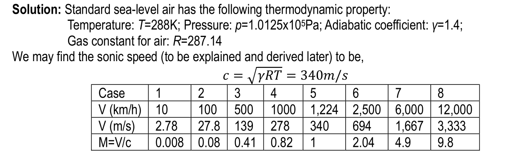
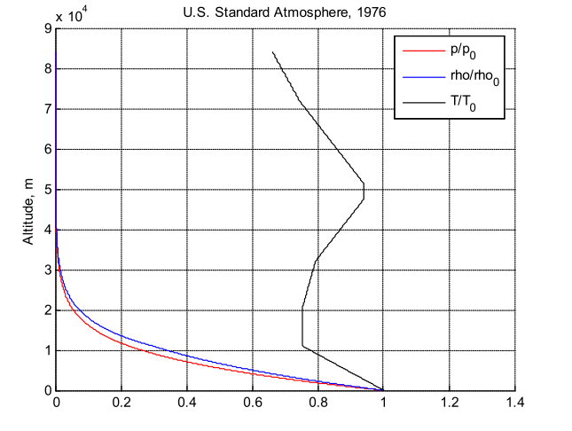
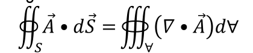

0. Review of Low-Speed Flows and Looking Ahead…
空气动力学模型。
1. 伯努利方程（第3章）
- 低速薄翼理论（第3章和第4章）
- 提升线理论（第5章）
课程中要学习到的空气动力学模型
A: Q1D FSAC（第10章）
冲击-膨胀理论（第8、9章）
线性化超音速流动理论（第11、12章）
亚音速相似性定律（第11章）
B: 可压缩库伊特流（第16章）
低速边界理论（Blasius解和其他，第18章）
湍流BL解决方案（第19章）
湍流模型（第19章）
老师锐评：
- 核心内容的介绍：1. verbal reasoning（文字推理是啥玩意）2. 公式，方程，派生（？），计算
- 难度：高（似乎很抽象；容易被混淆）。
- 警告：第3周涉及的材料是关键。
- 建议：空气动力学模型是关键。
- 一句废话
- 关注某个物体的：(1)它在流体中的运动，或(2)流过（？fluids going through）
- 在特定情况下应用流体运动的基本governing equations
- 设计符合某些要求的物体。
1. 追求更高的速度
(1) Capability: Being able to fly (Wright brothers).
(2) Transportation: Flight as a mean of transportation (Being faster, while safely, is important).
(3) Efficiency.
(4) Environmental Issues.
Review: Weight vs. Lift and Thrust vs. Drag
(1) 对于恒定的$C_D$，D与飞行速度的平方成正比。
(2) 当速度接近音速（音障）时，$C_D$会有很大的增加。
(3) 仅仅增加发动机的推力可能是不够的。
一个例子:准一维流动
我们主要关心x轴方向的变化而忽视截面的变化，即,横截面积的变化A=A(x)
这里我们讨论的是稳定的、不可压缩的、无粘性的Q1D流
给定ρ， a1, v1, p1时候的扩散:当a2变大时，v2→0;p2→p0;动能→热力学能
给定ρ a1 v1 p1时的Nozzle （气体喷出口？）当a2变小时，v2→∞;p2→-∞;动能←热力学能
有人说:p2只能降到0。当p2→0时，密度能保持不变吗?聪明的小盆友，请你来解答一下。
Volta Conference (1935): see Section 7.1, Anderson
讨论:时速800公里的飞机(1934年的航速纪录:700公里/小时，见下文附录B)
误解:音障;后掠翼设计(A. Busemann)
变密度空气动力学的重要性;跨音速和超音速风洞
高速->高动能->加热->温度升高
可压缩流理论领域(亚音速、跨音速、超声速、高超声速)
我们可以按照像stan那样引领世界科学研究潮流的顶级科学家和工程师的思路提出问题：
问题0101：为什么当飞行速度高时，我们需要考虑密度的变化？
问题0102：从数量上看，”高 “速度究竟意味着什么？
问题0103：究竟是什么导致了密度的变化？
一些飞行器的例子（懒得放图了）
2. 飞行速度和马赫数:一个例子
在我们揭晓 Volta Conference一节中列出的问题的答案之前，我们首先看一下我们之前研究过的一个例子
飞机在空中以恒定的速度V飞行。以空气为标准海平面大气压。将问题转换到固定在飞机上的坐标系(聪明的小盆友想一想为什么我们要转换到这样的坐标系?)求进流在不同V值时的马赫数。

对于情况1和2，我们可以使用空气动力学I中涉及的低速理论来求解飞机（或确切地说，机翼部分和机翼）的升力系数。
飞机（或者准确地说，机翼部分和机翼）的升力系数。案例3对我们来说已经是一个延伸
的低速空气动力学模型。情况4到8肯定超出了我们目前的知识范围。
马赫数在上面的表格中列出。但是，我们没有以严格的方式来处理它。它
只是简单地说，0.3的马赫数是低速和高速流动的分界点。当然。
我们需要弄清楚音速到底是什么，以及为什么我们要把流速与音速进行比较。
速度进行比较，然后我们才能理解可压缩流。
我们将在第11章和第12章中再次讨论解决围绕机翼（或机身）的高速流动问题。
你可能会发现，从现在开始到这些章节，我们所涉及的材料大多是针对所谓的
准一维（Q1D）流动。这些简单的流动，以及一些二维的情况，实际上为我们提供了
这些简单的流动以及一些二维案例实际上为我们提供了几乎所有的无粘性可压缩流动的精髓，当我们复习整个课程的时候，我们就会明白这一点。
当我们回顾整个课程的时候，我们就会明白。
3.流体的压缩性
可压缩性是任何流体的一个物理特性。我们所需要的是一个定量的衡量标准，以衡量流体压缩/膨胀的容易/困难程度。
压缩/膨胀流体的难易程度。根据常识，我们可以说，水（液体）不容易被压缩
而空气（气体）是容易压缩的。我们将流体的可压缩性定义为：
v是比容（？），p是压强。因此，从定义来看，τ是每单位压强变化的比体积的相对变化。或者，压强增加1pa, 1kg质量的流体所占的体积发生了多少变化(减少)。对于正的dp(压缩)，dv是负的，所以我们在定义中有负号，使τ为正参数。我们可以用密度来代替这个表达式，因为在空气动力学中使用密度比体积更常见，
当然，τ是流体的一个物理参数。我们可以在各种条件/过程下进行测量。
一般来说，τ的值取决于压缩的精确过程，而不仅仅是开始和结束的热力学状态。我们可以进一步将等温压缩性和等熵压缩性分别定义为:
这是一个在热力学意义上更精确的式子
在这里，我们用静态的方法处理了流体的可压缩性。当流体运动时，它会发生什么，这是我们在空气动力学中真正关心的情况
4.音速
让我们看一个例子:对于到处都是静止的空气，p， ρ， T的热力学状态恒定，假设在a点有一个扰动，一个微小的实心球突然爆炸。从物理学的角度来看，a处的固体会与周围的空气分子发生相互作用(将空气向外推)。
分子->宏观上，波是球体/圆柱体/平面。
碰撞力->动量传递，静止流体获得宏观速度。
动能和热能传递->流体获得动能和热能。
从流体力学的角度来看，我们说有压力波从a点传播。空气被推，它的压力会增加，尽管增加的量很小。ρ和T也发生了类似的变化。
我们声明:从流体力学理论，我们可以找出波的传播速度!
考虑到情况的对称性，压力波是球形的，这将使解的过程比下面的情况更复杂一些，它被留作家庭作业。我们接下来要讨论一个比较容易的问题。
考虑一个面积恒定的管道中的流体:V=0, p， ρ， t，一个非常小的波在其中通过。波速是恒定的c。现在，我们假设这个速度是恒定的。
波通过后，参数变为p+dp， ρ+ dp, T+dT, c-dV。让观赏者随波而行，即在不同的参照系(F.O.R)中。现在，我们有三个未知数:dV dp dp dp。
即，在不同的参考系中(F.O.R)。现在，我们有三个未知数:dV dp dp dp。
该过程可以被认为是绝热的：过程迅速；温度变化小。该过程也可以
可以被认为是可逆的：p和T的变化极小。因此，该过程可被视为
等熵，同时我们有：
因此，压力变化引起的密度变化可以用速度度量(m/s)来量化。
由此，我们至少可以模糊地看出，流动速度与流体的可压缩性有关。当流量达到足够高的速度时，可压缩性变得非常重要。等熵压缩性可表示为:
定义：声速是指介质中微小扰动的传播速度。
对于理想气体，等熵关系是成立的
关于声速的锐评：
(1) 通过公式2，我们可以看到由小干扰引起的压力波的速度只取决于
对特定的完美气体来说，取决于温度。
(2) 声速，即使在其名称中带有速度一词，实际上是一个热力学参数；它不
它并不取决于流速! 将声速和流速进行比较是完全不自然的。
(3) 流速可以是任意坐标系中的任意值。因此，谈论流速的任意相对值是毫无意义的。流动速度与声速的比较应该是在流动速度相对于干扰源的意义上。高流速应该意味着相对于扰动源(如迫使流动改变方向的固体壁)，流速较大。
(4) 对于15℃的空气：c约为340m/s=1,224 km/h（注：见下面的标准大气模型）；对于液体：c约为1500m/s=5,400 km/h。对于不可压缩的流动，c是无穷大的，这意味着任何扰动都会在整个流场中立即感受到。
在整个流场中立即感受到。
(5) 对于一般的流场，我们可以将热力学参数视为时空领域。因此，公式2也可以被看作是一个场，即c是一个热力学场。
5.移动平均扰动
扰动源是静止的，空气也是静止的情况已经被讨论过了
我们现在把注意力转向干扰源(一条直线)在静止空气中匀速移动的情况(你可能会想:与此对应的真实情况是什么?)如下图和图9.4所示，我们可以绘制出源和它在几个瞬时时间产生的波。
在图1中，设线源在t=0处的位置为坐标系原点。取点移动的方向为-x。设线源速度为V，设c=1m/s, V=2c=2m/s，水平实线上每个小区间的长度为1m。
结果显示，在V小于、等于或大于c的情况下，图片有质的区别。
大于c的情况下，图片的质量是不同的。波族的图案肯定会彼此不同。当V是
小于c时，一个较大的波（半径较大，产生时间较短）包含一个较小的波（半径较小。
最近产生的）。当V与c相同时，一个较大的波包含一个较小的波，但它们共享一个
共同点，这也是源头目前所在的点。当V比c大时，一个较大的波
可能不包含一个较小的波，而且源总是在所有波的左边。另外，存在一个楔形
(点源的情况下是圆锥)，其顶端在源头，包含所有的波。更准确地说，这个楔子
楔子与所有波相切，这当然看起来更有趣。楔形/锥体似乎是
特殊的东西。它有一个名字：马赫锥体（或马赫楔体）。当然，楔形/锥形的形状
可以完全由它的半角来表示，它满足
我们称这个角为μ马赫角。要使它有意义，M=V/c必须不小于1。
重看：流体运动领域
(1) 声学。与c相比，V是非常小的；但p、ρ、T的变化是很大的
(2) 不可压缩的。V不小，p、T的变化很大，ρ的变化不大。
(3) 可压缩的。V不小，p, ρ, T的变化是显著
马赫数:M=V/c
M<1：流动为亚音速；M>1：流动为超音速；M<1和>1并存：跨音速。M的含义和意义是什么？M代表宏观动能与内能的比率。所以当M小的时候，V对流体的热力学状态的影响很小。M还代表运动中的流体的可压缩性。M对可压缩流来说是一个非常重要的参数
可压缩流的本质
(1) 如果我们将任何流场视为均匀流动和障碍物（如固体）之间的相互作用。其结果是所有作用于原始未受干扰的流动之上的干扰的组合。
(2) 扰动，是由分子碰撞引起的，用压力波表示。
(3) “可压缩性 “意味着密度的变化。可压缩性是流体的一个物理属性。所有流体都是可压缩性。必须有一个衡量压缩流体的容易/困难程度的标准。该措施必须是一个该措施必须是流体本身的物理属性和其当前热力学状态的函数。
(4) 导致密度变化的机制有几种。但其本质是压力波导致了密度的显著变化。这就是我们在空气动力学中所关心的。
可压缩流的例子
(1)高速流动不是一个普通的事件!
(2)高速飞行的。飞机/火箭/航天器
(3) 流经。燃气轮机/蒸汽轮机/其他应用
(4) 爆炸波…
(5) 主要是与动力/推力有关的工程应用
(6) 空气动力学是航空航天工程中最重要的基础学科
标准大气压（回顾）
(1) 大气层是飞机航行的地方。当然，我们需要知道它的特性。
(2) 大气层有季节性的变化。
(3) 大气层在各种天气条件下会有所不同。
(4) 对于航空工程师来说，这里最重要的参数是海拔高度。常识告诉我们
海拔越高，空气越冷，气压越低。
(5) 人们设计了一个术语，叫做标准大气，它给出了海拔高度的空气特性
从零（海平面）到外缘。它以经验数据为基础，是季节平均的。
(6) 现在，我们通常使用美国标准大气层（1976年）作为我们获得空气属性的来源。请参考 “US_Standard_Air1976.m “和 “US_Standard_Air1976_test.m “来获取空气特性。下面是标准空气在0至80公里高度的压力、密度和温度图。80公里的标准空气的压力和温度图。
(7) 你在今后的学习中需要使用这些Matlab文件，所以要学习它们的工作原理。

(1) 追求更高的速度
(2) 密度变化（可压缩）在高速飞行时是很明显的
(3) “高速 “是相对于 “音速 “而言的，音速是小干扰（压力波）的传播速度。
波）马赫数和马赫锥的 “依赖区域 “和 “影响区域”
(4) 压力变化引起的密度变化是主要关注点（可压缩流的本质）
关键词：高速；可压缩；压力波
附录A: Fundamental Governing Equations回顾
为了发展流体流动的理论，我们必须有。
- 一个基于物理物质的特定兴趣对象，这使我们能够……
- 定义一组物理变量（有各自的数值和单位）。
- 必须遵守所有的基本物理规律，从而导致……
- 一组决定每个物理变量行为的管理方程（理论的在于：我们可以建立A，并建立A=B，当B已知时，A就成为一个已知值）。
流体力学/空气动力学。
概念。连续流场
定义。动力学：速度矢量；热力学：压力、密度…
基本法则。质量/动量/能量守恒
管理方程。5个方程，5个未知数
空气动力模型。简化/具体理论
关注对象-“概念”
力学：粒子和刚体
有变形的质量体
我们可以采取多体方法吗？事实证明，我们应该把流体作为一个连续体，并关注
关注流体的宏观属性
例如：定义密度场。我们将不使用分析 “流体粒子 “的方法，而是使用
一小部分流体粒子的总和–”流体元素”
重要的力是施加在表面上的，而不是施加在具体的粒子上。这就是
经典力学研究和连续力学研究之间的主要区别。
总结：
- 所关注的最小质量被称为流体元素，它是空间中无限小的点。
- 一个流体元素的物理特性是许多流体分子的宏观特性。
- 流体的任何部分都由连续分布的流体元素组成
参数定义
懒得翻译了
无粘流控制方程的推导
Control Volume
我们能在欧拉方法中直接将物理定律应用于流体粒子吗？(答案是否定的）。
相反，我们使用一个控制体积，将物理定律应用于其中。
控制体积（CV）是由一个封闭的表面所包围的体积，它可以是任意形状的（见
下面的图1）。
通常情况下，控制体在空间中的位置是固定的（不随时间变化）。
流体颗粒填充在CV中
我们考虑CV内部物理变量的变化和通过CV表面进行的交换。
的表面（我们称其为控制面，CS）进行交换。
在CS上，流体粒子或者流入或者流出CV
随着时间的推移，CV内部的流体粒子在不断变化
例如：我们可以得到在时间t内CV的总质量为。
a. Control Volume and Control Surface
一个任意的控制体积如图A1所示。体积被一个封闭的表面S所包围，这个表面被称为称为控制面。在欧拉方法中，我们让它在空间有一个固定的位置。随着时间的推移，流体进入/离开CS

例如，当你扣b，淫水就会流出来。如果我们想分析水管内的水流，我们可以建立一个像这样的control volume
随着时间的推移，水从左边流入CV，从右边流出CV。在阴道壁上，我们知道不会有淫水流入/流出。
b. Control Surface的一段
回到图A1。让我们拿出CS的一小部分。这一小块的面积是dS。我们用点A表示dS。点A的坐标是(x1, y1, z1)我们定义dS的外法线方向为n，它是一个单位向量，垂直于dS并指向远离CV。然后我们用一个约定来定义向量dS，如下所示，
如图A3所示，在dS上，我们可以定义流体的局部速度向量V。现在，我们感兴趣的是CV通过dS的流出/流入的质量。几何学告诉我们，
平行分量，V t，不会通过dS带来CV质量上的增减。只是以dS为单位流动。从时间t到t+Δt，通过dS进出CV的质量是
其中减号是由于惯例，流入CV的质量被标记为正，而流出的质量被视为负。流出的质量则被视为负数。单位时间内通过dS的质量流量为。

c.通过整个 Control Surface的质量流
整个CS的总质量流量是dS的所有小部分的总和，
d.质量守恒
现在回到建立连续性方程。质量守恒定律只是说:质量不能被消灭，也不能被创造。对于图A1所示的情况，我们有，
(1) CV内总质量的时间变化率必须等于
(2)通过CS的质量流量
我们计算了后一个值(Eq. A2)。现在，让我们计算第一部分。
e.无穷小流体元件和控制体积内的质量
首先考虑在CV内(x2, y2, z2)点B周围的一个无穷小流体元素，它的质量为
CV内部的总质量是所有小元素的总和的极限，当d(Vol)} 0的大小
CV内总质量的时间变化率为
注意CV不随时间变化，所以我们可以在积分内对t求导
f.连续性方程(积分形式)
质量守恒定理规定(A2)=(A3)
公式A4是连续性方程的积分形式。我们没有假设任何关于控制体的形状和位置的信息。唯一的要求是CS是一个闭合曲面。因此，公式A4适用于流场中任意形状和大小的CV。注:从严格的微积分角度来看，对物理变量的CS和微分性质有要求。
其中包括变量的连续性、可微性等。如果你对这些感兴趣，请查阅相关书籍。现在，我们假设等式A4可以被写出来，任何额外的要求都隐含满足了。
Eq. A4可以通过高斯定理化为一个单独的积分。高斯定理说，

这意味着，对于任何向量A，它在一个封闭曲面S上的积分，等于A的散度在S包围的体积上的体积积分，将这个向量替换为ρV(这确实是一个向量)，我们得到(A4)的LHS为，
g.连续方程(微分形式)
公式A5对于流场中的任何CV都是有效的。在这种情况下，函数的体积积分处处为零。为了使它成立，函数本身必须在流场中处处为零。
因此，我们得到，在flow field的任何地方
h. 连续性方程的两个特例
定义:当所有物理位置的所有物理变量的值都不随时间变化时，流被称为稳态(或稳态)，即:
对于定常流，连续性方程为
定义:如果所有流体元素的密度不随时间变化，则流体被认为是不可压缩的。不可压缩并不一定意味着ρ(x, y, z, t)=常数。我们可以有两个不同密度值的元素，它们不随时间变化。我们将在后面讨论这个问题。对于均匀不可压缩流体流动，ρ(x, y, z, t)=常数，我们得到，
对于定常和非定常流动都是如此。
动量方程
再次看图A1，牛顿第二定律表明，
(1) CV动量变化的时间变化率
=(2)通过CS进入CV的动量流率
+(3)作用在CV上的总力。
我们将遵循与得到连续性方程相同的步骤。CV内的总动量是
CV内总动量的时间变化率为，
再次注意，CV不随时间变化，所以我们可以在积分内求偏导。
透过CS
作用在CV上的力可以分为两组。首先，有力作用在CV内部的每个流体元素上，但没有直接接触。我们称之为“身体力”。例如，重力是一种身体力。我们用F表示单位质量的力。
其次，有一些力作用在CS上。我们已经讨论了压强和剪力(shear forces)。这些力在本质上是分子的。它们作用于CS上的流体元素。力的来源来自相邻的流体元素或固体。这里，我们只考虑压强。由于忽略了剪切力，即忽略了粘性的影响，我们的研究仅限于无粘性流动。如下图所示，作用在小dS上的压力总是在-n方向上。
能量方程
(1) CV的能量变化率
=(2)通过CS进入CV的能量率
+(3)作用在CV上的力做功速率
+(4)作用在CS上的表面力做功速率
我们将遵循得到连续性和动量方程的相同步骤。
CV内的总能量是，
e是热力学能(单位质量)。
CV内总能量的时间变化率为，
压强所做的功的速率
附录B
看起来没啥用，不翻译了